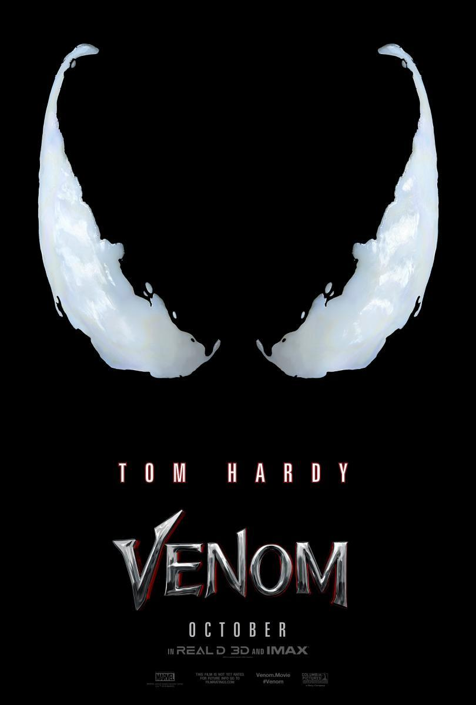

Hola soy Edu.
Estoy haciendo una practica de AW :) y aqui se supone que tendria que escribir algo sobre mi pero no se el que asique estoy rellendandolo un poco.
Pulsa para ir a Google
Sigueme en mis Redes sociales


Algunas de mis peliculas favoritas
 |
Es una película de drama y ciencia ficción británico-estadounidense y canadiense de 2014, dirigida por Christopher Nolan y protagonizada por Matthew McConaughey, Anne Hathaway, Jessica Chastain, Michael Caine y Matt Damon. Ambientada en un futuro distópico donde la humanidad está luchando por sobrevivir, cuenta la historia de un grupo de astronautas que viajan a través de un agujero de gusano cerca de Saturno en busca de un nuevo hogar para la humanidad. |
|  | Es un antiheroe y supervillano que aparece en los cómics publicados por la editorial estadounidense Marvel Comics. El personaje es un extraterrestre sensible simbionte con una forma amorfa, semi-líquido, que sobrevive mediante la unión con un huésped, por lo general humano. Esta forma de vida dual recibe poderes mejorados y generalmente se refiere a sí misma como «Venom». El Simbionte se introdujo originalmente como un traje alienígena viviente en The Amazing Spider-Man # 252 (mayo de 1984), con una primera aparición completa como Venom en The Amazing Spider-Man # 300 (mayo de 1988). |
 |
Es una película estadounidense de 1972 dirigida por Francis Ford Coppola. La película fue producida por Albert S. Ruddy, de la compañía Paramount Pictures. Está basada en la novela homónima (que a su vez está basada en la familia real de los Mortillaro de Sicilia, Italia), de Mario Puzo, quien adaptó el guion junto a Coppola y Robert Towne, este último sin ser acreditado.2 Protagonizada por Marlon Brando y Al Pacino como los líderes de una poderosa familia criminal ficticia de Nueva York, la historia, ambientada desde 1945 a 1955, cuenta las crónicas de la Familia Corleone liderada por Vito Corleone (Brando), enfocándose en el personaje de Michael Corleone (Pacino), y su transformación de un reacio joven ajeno a los asuntos familiares a un implacable jefe de la mafia ítalo-estadounidense. |
Sobre esta pagina
Esta pagina esta hecha por Eduard Pop aqui esta mi pagina de github por si me quieres visiar